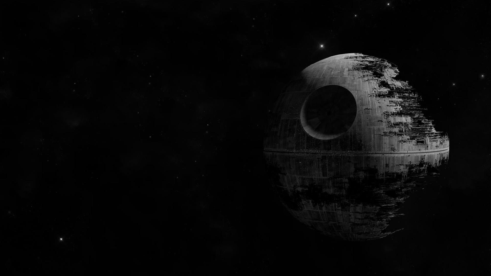

STAR WARS
Discovering a new world
Um pouco da tecnologia de guerra de Star Wars:
(Clique nas imagens para abrir)

Estrela da Morte
Estrela da Morte
Estrela da Morte e uma estacao espacial belica criada pelo Imperio Galactico na serie cinematografica de ficcao cientifica Star Wars. E uma gigantesca estacao espacial esferica, com 140 km de diametro. Carrega milhares de soldados (stormtroopers), cacas TIE e cacas TIE avancados como o de Darth Vader, mas sua arma maior e o superlaser que possui um formato de uma gigantesca cratera, que causa a destruicao total de planetas, como o planeta natal de Princesa Leia (irma de Luke Skywalker).
AT-AT Walker
 O Transporte Blindado para Todo Terreno, ou walker AT-AT, e um veiculo de transporte e combate dotado de quatro pernas, usado pelas forcas terrestres do Imperio. Com mais de 20 metros de altura e blindagem a prova de blaster, estas maquinas sao usadas nao apenas para efeito tatico, mas tambem para efeito psicologico.
O Transporte Blindado para Todo Terreno, ou walker AT-AT, e um veiculo de transporte e combate dotado de quatro pernas, usado pelas forcas terrestres do Imperio. Com mais de 20 metros de altura e blindagem a prova de blaster, estas maquinas sao usadas nao apenas para efeito tatico, mas tambem para efeito psicologico.
Millennium Falcon
 A Millennium Falcon foi uma lendaria nave estelar a despeito de sua origens humildes e exterior enganosamente dilapidado. A Millennium Falcon foi elemento-chave em algumas das maiores vitorias da Alianca Rebelde sobre o Imperio. Na superficie, a Falcon aparenta ser como qualquer outro cargueiro corelliano, com o casco primario em forma de disco e uma cabine cilindrica montada ao lado da nave. Embaixo de sua fuselagem, entretanto, a Falcon guarda muitos segredos poderosos.
A Millennium Falcon foi uma lendaria nave estelar a despeito de sua origens humildes e exterior enganosamente dilapidado. A Millennium Falcon foi elemento-chave em algumas das maiores vitorias da Alianca Rebelde sobre o Imperio. Na superficie, a Falcon aparenta ser como qualquer outro cargueiro corelliano, com o casco primario em forma de disco e uma cabine cilindrica montada ao lado da nave. Embaixo de sua fuselagem, entretanto, a Falcon guarda muitos segredos poderosos.
Star Wars
Star Wars e o titulo de uma franquia de opera espacial estadunidense criada pelo cineasta George Lucas. A franquia conta com uma serie de sete filmes de fantasia cientifica e um spin-off. O primeiro filme da serie foi lancado apenas com o titulo Star Wars em 25 de maio de 1977, e se tornou um sucesso inesperado e fenomeno mundial de cultura popular. Star Wars foi responsavel pelo inicio da "era dos blockbusters": Super producoes cinematograficas que fazem sucesso nas bilheterias e viram franquias com brinquedos, jogos, livros etc. Foi seguido por duas sequencias, O Imperio Contra-Ataca e O Retorno do Jedi, lancadas em intervalos de tres anos. Esta primeira trilogia seguia o trio hoje iconico: Luke Skywalker, Princesa Leia e Han Solo. O trio lutava na Aliança Rebelde para derrubar o tirano Imperio Galactico; paralelamente ocorre a jornada de Luke para se tornar um cavaleiro Jedi e derrotar tanto Darth Vader, um ex-jedi que sucumbiu ao Lado Sombrio da Forca e o Imperador.